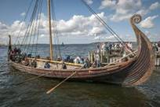
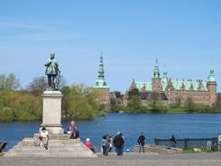
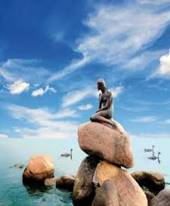
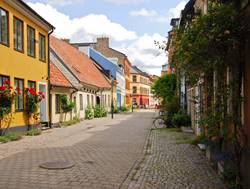
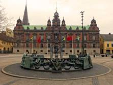
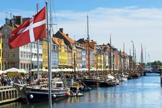
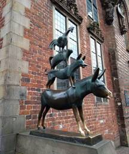
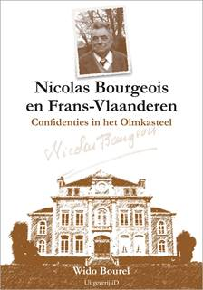

> Zannekin Nieuwsbrief > 36e
jg. - 2e trimester 2020
De
jaarwisseling is ondertussen voorbij. We danken de vele leden
die sindsdien spontaan hun ledenbijdrage vereffenden. Wie dit
tot nog toe naliet vindt bij dit nummer andermaal eren
betaalformulier. Nagaan of u wel dan niet betaald hebt leest u
af op het adresetiket van dit nummer. Indien u boven uw naam een
*-symbool vindt, dan is alles in orde. Ontbreekt dit *-symbool, dan wijst dit er op dat we
uw bijdrage nog
niet mochten boeken.
De
minimumbijdrage bleef behouden op 29 . In ruil daarvoor
verzekeren we u de stipte toezending van het nieuwe Jaarboek De Nederlanden
extra muros het 42e al in de meimaand en van de
vier nummers van ons kwartaalblad Nieuwsbrief Zannekin.
Vanaf het bedrag van 35 boeken we u met dank als steunend lid.
Vereffening graag via onze rekening IBAN: BE13 4648 2202 5139
BIC: KREDBEBB t.n.v. Vereniging/Stichting, Paddevijverstraat 2,
8900 Ieper.
Zannekin-Ontmoetingsdag voorzien op zaterdag 2 mei 2020 te Rijsel doch afgelast
Programma:
11.00 - 11.30 uur: Verwelkoming met
koffie/thee/warme choco in La Taverne Flamande, place de la
Gare 15 - Rijsel (rechtover het station Lille-Flandres)
11.30 uur Lezing Rijsel, Vlaamse stad door
Rijselnaar G.P. De Verrewaere
12.15.uur Vlaams middagmaal - aperitief -
gegratineerd witloof met aardappelpuree met drankje
koffie/thee
13.30 Keuze tussen twee rondleidingen:
Groep A: wandeling langs de Sint-Mauritskerk, de rue
de Béthune, de place Faidherbe tot het Museum voor Schone
Kunsten met uitgebreid bezoek aan de collectie Vlaamse en
Hollandse meesters, alsook de maquettes in de kelderverdieping.
Het Museum herbergt de grootste verzameling van schider- en
beeldhouwkunst na het Louvre te Parijs.
Onder leiding van Jan van Tongeren (maximum
15 personen)
Groep B: wandeling naar het stadhuis van Rijsel, het
monument ter ere van Roger Salengro, de Parijse Poort, het
Hospice Ganthois, de Sint-Mauritskerk, de Oude Beurs, het Palais
Rihour, de rue Esquermoise, de kathedraal Onze-Lieve-Vrouw van
het Hek, de place aux Oignons, de Hospice Comtesse, de Kamer van
Koophandel., Onder leiding van Leo Camerlynck
16.00 uur: Iedereen samen bij een lekkere
Vlaamse pannenkoek met een glaasje cider en koffie/thee in Le
Flandre of opnieuw in La Taverne Flamande. 17.00 uur: Einde.
Tengevolge van de huidige Corona-problemen
blijkt het onmogelijk in rijsel de noodzakelijke afspraken
te maken inzake restaurants en toegangen. We nemen ons voor
dit programma op een later tijdstip te hernemen.
Zannekin-Studie-uitstap 17 oktober 2020 naar Oud-Heusden/Vieil-Hesdin en Terwaan/Thérouanne
dat in 1553 vernield
werd door Keizer Karel;
Alle info omtrent
deze Studie-uitstap leest u in de volgende Zannekin-Nieuwsbrief..
Stichting ZANNEKIN Meerdaagse Cultuurreis: Vlaams-Nederlandse sporen in Noord-Duitsland en Zuid-Scandinavië
Van 16 tot en met 23 augustus 2020
REIS NAAR HET LAND VAN DE VIKINGS EN DE
HANZEATEN
De Vikings, de kleine zeemeermin en andere
sprookjes van Hans-Christian Andersen, en ook nog Niels
Holgerson van Selma Lagerlöf, Pipi Langkous, de Bremer
Stadsmuzikanten, en buiten de feeërieke taferelen zijn er nog
Wallander, de Brug, Sandhamn en de politieseries, die ons vaak
aan de beeldbuis of vlakscherm (flatscreen)
kluisteren. Maar, er is veel meer dan die mooie fictieve
verhalen. Wist u overigens dat talrijke waardevolle kastelen,
waterburchten, beursgebouwen en kathedralen door Vlamingen en
Nederlanders werden ontworpen? Het kasteel van Kronborg in
Helsingør, waar Shakespeare zijn Hamlet liet optreden, is
ontworpen door een Mechelaar, de Beurs van Kopenhagen door een
Amsterdammer, de majestueuze buitentrap van het stadhuis te
Lübeck door een Antwerpenaar, de kasteelhoeve Glimmingehus door
een Limburger, en ga zo maar door.
Vergeten wij evenmin de lekkere smörgåsbord
met de gravlax of gemarineerde zalm met dillensaus of de
smørrebrød-lekkernijen. Een ommetje in een Deense of Zweedse
konditori met lekker geurende koeken en koffie naar believen sla
je niet meteen af. Of een marsepeinfestijn in het Lübeck van
Thomas Mann.
Wil je de gemoedelijke sfeer van Scandinavië
en van Noord-Duitsland proeven en tegelijk heel wat moois zien,
dan is dit een unieke kans.
In tof gezelschap met luxe autocar en leuke
boottochten. Gegarandeerd!!
ACHT DAGEN
Dag ÉÉN: Sint-Pieters-Leeuw VENLO Münster
BREMEN LÜBECK.
Dag TWEE: LÜBECK stadsbezoek van deze prachtige
Hanzestad met zijn Holstentor, zijn stad-huis, kerken,
hanzeatische gebouwen vrije boottocht op de Trave.
Dag DRIE: Lübeck Puttgarden - boot Rødby
Kopenhagen MALMÖ (stadsbezoek met het stadhuis, een blik in
het slot, de oude stadskern) LUND.
Dag VIER: LUND stadsbezoek met de kathedraal en
het openluchtmuseum + rondrit GLIMMINGEHUS (waar Niels Holgerson
met zijn gans neerstreek) YSTAD (bekend van Wallander).
Dag VIJF: Lund Helsingborg HELSIN-GØR (kasteel
van Hamlet) HILLERØD (kasteel Frederiksborg) - ROSKILDE
(kathedraal en Vikingmuseum)
DAG ZES: Roskilde KO-PENHAGEN (stadsbezoek met de
zeemeermin, Nyhavn, de beurs, het stadhuis, het Koninklijk
Paleis, strøget + mogelijkheid tot het bezoeken van Tivoli) +
eiland DRAGØR met zijn Hollands verleden - Roskilde
Dag ZEVEN: Roskilde Rødby - boot -. Puttgarden
BREMEN /WORPSWEDE (bezoek aan het kunstenaarsdorp Worpswede en
aan de fraaie gebouwen van Bremen)
Dag ACHT: BREMEN MÜNSTER (stadsbezoek met de
gotische kerk, het Huis der Nederlanden, de fraaie gevels)
Essen VENLO Sint-Pieters-Leeuw.
Prijs:
1.299,00 uro toeslag éénpersoonskamer 400,00 uro
INBEGREPEN: luxe
touringcar, hotels, gids, rondleidingen, uitgebreid
ontbijtbuffet, avondmaal op dag 1, dag 3, dag 5 en dag 7,
bootovertochten.
NIET
INBEGREPEN: overige
maaltijden en dranken, persoonlijke uitgaven, toeristentaks,
andere bezoeken en entreegelden, annuleringsverzekering,
bijstandsverzekering...
INSCHRIJVING
en INFORMATIE: Bell Tours, Bergensesteenweg
772,1600 Sint-Pieters-Leeuw, Telefoon: 00 32 2 356 63 50 - info@belltours.be
Bankrekening IBAN BE82
7765 9536 3768 BIC GKCCBEBB
Graag ook uw deelname
melden aan Leo CAMERLYNCK, Edouard Michielsstraat 51, B. 1180
UKKEL / Brussel, Selfoon 00
32 485 630 227 leo.camerlynck@skynet.be Ook
voor bijkomende informatie
Nicolas
Bourgeois (1896-1982) was tijdens het interbellum en in de
oorlogsjaren een Frans-Vlaamse voorman en schrijver met aanzien.
Een sleutelfiguur om de Vlamingen in Frankrijk beter te
begrijpen, tijdgenoot, vriend, rechterhand en intellectueel
alter ego van Jean-Marie Gantois, de leider van het Vlaams
Verbond van Frankrijk.
Wido Bourel ontmoette Nicolas Bourgeois voor
de eerste keer in 1972. Het begin van vele boeiende gesprekken
in het Olmkasteel in Hazebroek, waar Bourgeois woonde.
Na briljante studies aan de Ecole Normale
Supérieure werd deze eminente kenner van het gedachtegoed van
Pierre-Joseph Proudhon de meest actieve federalist in
Frans-Vlaamse kringen. Als gewezen student aan de Normale Sup
beschikte Nicolas Bourgeois over het uitgebreid netwerk van de
Franse elitescholen. Van de ministeries tot de krantenredacties
en de universiteiten, overal vond je anciens van de Normale Sup
met wie Bourgeois zijn leven lang in contact bleef.
Als schrijver heeft Nicolas Bourgeois - ook onder vele schuilnamen - een omvangrijk oeuvre nagelaten. Zijn verhalen en essays getuigen van een scherpe eruditie en schalkse humor, gekoppeld aan een
{kind=link}
{kind=link}